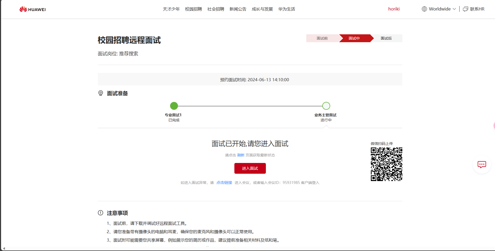

面试记录2：华为业务主管二面
1 面试背景
- 面试公司：华为技术有限公司
- 面试岗位：推荐搜索
- 面试类型：业务主管二面
- 面试时间：2024-06-13 14:15~14:50
- 面试结果：通过 😊
2 整体感受
面试官没有开摄像头，不知道面试官的表情，感觉有点不得劲哈哈。

整体来说感觉还行，这次面试没有问很多技术上的问题，更多是对你价值观一些的问题，还有会深挖一些简历上的东西，所以应该对简历上的内容非常熟悉。
而且，面试官真的很好，我面试中说到了我早上8点之前就到实验室，然后除了吃饭之外，基本上都在实验室，晚上10点才离开，然后面试官就开始鼓励我，他说“你的这个习惯真的很好，一定要坚持下去，因为等你到中年发现，你一生中的很多成就都是在你青年的时候获得的，所以在你青年的时候一定要多做一些事情，这样你才有所收获”。
面试结束了，之后也没有其他的面试了，就只有等待结果了，希望自己可以通过，真的很想去华为实习，这个经历真的很 nice。
自己做的不错的地方：
- 面试官问什么就答什么，可以适当拓展，但是不要说太多了，要不然面试官可能都不想听下去
- 回答的逻辑也比较好，有条理，可以让面试官抓到重点
- 感觉自己的面试经验经过这几次面试已经提升了很多了
3 提问的问题
问：你能介绍一下论文中的创新点吗？
答：blblbl，感觉面试官不太懂这个，但是只要你讲出自信，他就没啥问题要问你了
问：你能说一下你这个实验是怎么做的吗？
答：我是在学校机房开了20~30台机器做的，每组算法之间对战了1000局游戏
问：最后的效果怎么样？
答：最后的效果对比MCTS的胜率是55%，然后对比传统的博弈搜索算法AlphaBeta和Minimax的效果会好很多，然后我分析了一下为什么效果只有略微的提升。
- 由于实验部分是在海克斯棋游戏上进行，棋盘大小是19×19，状态空间较大，所以搜索得到的结点之间的联系较弱，不能形成非常有效的关系。
- 另外，实验的计算资源也有限，没有搜索很长时间，所以搜索的结点数也较小，如果搜索时间越长，效果就会越好。
问：你平时了解咨询的主要途径有哪些？
答：主要是通过github，它有一个流行仓库的功能，所以我会经常看一些这种仓库，除此之外，会经常看一些IT人写的技术博客，另外也会看一些类似华为公司的产品发布会或者技术文档。
问：你刚才说你主要通过github看一些东西，那能举一个例子吗？
答：我最近在github上学习了上海人工智能实验室的书生·浦语大模型，它有一个技术文档，并且会分配给你免费的算力，你可以部署它的一些模型。另外，它还有茴香豆，就是在群聊中的一个AI小助手，它会识别群友的问题是否是有效的问题，如果是有效的，那么它就会进行回答，否则它就当作没看见。
问：你想通过这次实习得到什么，或者说你对这次实习的期待是什么？
答：我最想通过这次实习提升自己的能力，总感觉自己在学校中学习到的和在工业界真正能应用的还是有差距的，因此我想通过这次实习提升自己这方面的能力。此外，我经常在学校中，我知道学校中的东西和在社会上的东西其实是有很大差距的，所以这也是我期待的地方。
问：你能说一下对华为的认识，价值观之类的吗？
答：我认为华为是一个很有野心的公司，blblblb………
问：你未来的职业规划是什么？
答：我的成绩比较优异，所以能拿到学校的推免资格，明年毕业后应该继续读研，研究方向应该也是深度学习方向。
 微信
微信 支付宝
支付宝